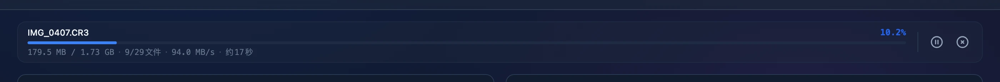

中断不留半成品，源文件从不动
倒卡最怕拔错卡、NAS 掉线、半截文件盖掉好文件。这一章把大师拷贝为这些情况做的设计集中讲清楚：文件怎样写进目标，重复怎样判断，哪些情况会停下来让你重新扫描，失败以后怎样恢复，以及配置和凭据怎样留在你的 Mac 上。
五条底线
大师拷贝把每一次写入都当成随时可能被打断的操作。下面这些规则始终生效，不需要额外设置。
- 目标里只有完整文件正式文件名出现的那一刻，内容已经全部写完并同步到磁盘。写到一半的数据只存在于隐藏的临时文件里，出错就删掉。
- 不静默覆盖发布新文件时，同名文件如果已经存在，这次发布直接失败。只有你打开 覆盖重复文件，并且两个文件内容确实不同，才会替换原文件。
- 源文件只读SD 卡、大疆设备和 EOS Utility 的保存目录，大师拷贝只读取，不修改，不删除。
- 情况不对就停源文件在扫描后变了、比较期间变了、目标目录的结构不对，都会停下来提示重新扫描。它不会拿着过时的判断继续写。
- 数据留在本机没有账号，不连云端，配置文件只有你的 macOS 用户能读。
后面各节依次展开这些规则，最后一节列出目前做不到的事。
出了意外会怎样
倒卡和联机时最常见的几种意外，结果如下。表里说的「已完成」，指已经用正式文件名发布到目标里的文件。
| 情况 | 目标里会留下什么 | 接下来 |
|---|---|---|
| 上传中点取消 | 已完成的文件全部保留。正在写的临时文件删除，同名的原文件一个字节都没动。 | 再点 开始上传，只处理没完成的文件。 |
| 拷贝中拔卡 | 当前文件和后面的文件逐个记为失败，临时文件删除。已完成的保留。 | 插回存储卡再上传，只补没完成的。 |
| NAS 中途掉线 | 已完成的文件完整。当前文件记为失败，它的临时文件可能留在 NAS 上。 | NAS 挂载回原来的位置后再上传。 |
| 强制退出或断电 | 已完成的文件完整。正在写的那个文件可能留下一个 .part 临时文件。 | 重新扫描再上传。临时文件可以手动删掉。 |
| 源文件被改过 | 这个文件不写入，记为失败，提示源文件在扫描后发生变化。 | 按提示重新扫描。 |
| 联机时目标不可写 | 照片留在来源处，照片流里标为 失败。 | 自动退避重试，目标恢复后接着入库。 |
| 联机时应用退出 | 已完整收到、还没入库的照片留在收件箱里。 | 下次开始 FTP 会话时自动继续入库。 |
写入：临时文件与独占发布
SD 卡和大疆备份、联机拍摄入库，用的是同一套写入流程。每个文件先写进同一个日期目录里的隐藏临时文件，写完、核对、落盘之后，才换成正式名字。
- 新建临时文件。在目标日期目录里新建
.mascopy-<进程号>-<序号>.part。文件名以点开头，访达默认不显示。权限是0600，写入期间只有你的用户能读写。新建时要求这个名字此前不存在，不会打开或截断任何已有文件。 - 分块拷贝。按 1 MiB 一块从源文件读出、写进临时文件。进度、暂停和取消都在块与块之间生效。
- 核对源文件。读完后确认读到的字节数等于扫描时的大小，并且源文件的大小、修改时间和文件身份（所在设备与 inode）在拷贝前后完全一致。路径上指向的必须仍是当初打开的那个文件。
- 保留属性。把源文件的权限、访问时间和修改时间复制到临时文件上。备份出来的照片在访达里显示的修改日期和卡上一样。
- 落盘。调用
fsync，确认数据已经写到磁盘上，没有只停在系统缓存里。 - 发布。新文件用 macOS 的
renamex_np加RENAME_EXCL改成正式名字：目标名已经被占用就失败，不会盖过去。只有状态是 将覆盖 的文件才用原子替换，别的程序看到的要么是旧文件，要么是完整的新文件。
/Volumes/NAS/照片备份/2026-08-10/ ├─ IMG_0420.CR3 上一个文件，已发布，内容完整 └─ .mascopy-4127-3.part 正在写 IMG_0421.CR3，隐藏，仅本人可读写 ↓ 写完 → 核对源文件 → 复制权限与时间 → fsync IMG_0421.CR3 独占发布；此时同名文件已存在就失败
写入过程中任何一步出错，或者你点了取消，临时文件都会被删除。目标里原来的文件在发布之前一直没被碰过，所以一个 将覆盖 的文件拷到一半取消，原文件仍然完整。
扫描之后，别的电脑可能往 NAS 的同一个日期目录写进同名文件。独占发布让这种情况变成一次明确的失败，提示「发布文件失败（目标可能已存在）」，重新扫描后按新情况判重。
同一时间只运行一个上传任务。已有任务在跑时再发起上传，会提示「已有上传任务运行中，请等待其结束」。上传进行时 返回配置 不可点，配置表单也锁住，避免这一批还没写完就换了目标。
源文件只读不删
备份的意义在于多出一份副本。大师拷贝在任何模式下都不改动你的原始素材，清卡的时机由你自己决定。
- SD 卡与大疆模式扫描和上传都以只读方式打开源文件。拷贝完成后，源文件原样留在卡上。
- 推出设备只在你点 推出设备 时执行，调用系统的
diskutil eject推出源路径所在的/Volumes卷。源路径不在/Volumes下时不执行任何操作，弹出「推出失败」说明原因。 - 监听文件夹模式永远保留来源文件。大师拷贝无法确认 EOS Utility 已经写完，所以旧版本配置里的「入库后删除」已经作废：界面不再提供，后端收到这个要求也会直接拒绝，提示「监听模式无法确认上游写入已结束，必须保留来源文件」。
- FTP 直传唯一会删除的是收件箱里的副本，而且只在两种情况下删：照片已经入库成功，或者确认目标里已有内容完全相同的文件。删除前还会再确认这份副本在入库期间没被改写；改写过就保留新版本，等下一轮处理。
- Eagle 导入导入 Eagle 把原图路径交给 Eagle，由 Eagle 自己复制一份进资源库。裁剪在内存里完成，存储卡上不写任何文件。
源和目标必须分开
源和目标重叠时，拷贝可能把刚写出的文件再读进来。大师拷贝在三个地方拦下这种配置：
- 扫描前，源目录和目标目录不能相同，也不能互相包含。判断用的是解析过符号链接的真实路径，通过别名绕一圈指向同一处也算，提示「源目录与目标目录必须分离，不能相同或互相包含」。
- 上传前，逐个检查源文件的真实路径，落在目标目录里就拒绝整批，提示「源文件位于目标目录内，请重新扫描」。
- 开始联机会话前，监听目录和备份目标同样不能相同或互相包含。
逐字节判重
目标日期目录里已经有同名文件时，大师拷贝会比较两个文件的全部内容。只看文件名和大小，会把「大小刚好相同、内容不同」的两张照片误判成重复；逐字节比较不会。
| 目标里的情况 | 状态 | 结果 |
|---|---|---|
| 没有同名文件 | 将上传 | 用原名写入。 |
| 同名，内容相同 | 将跳过 | 不写入。上传时再比较一次，确认仍然相同才算跳过完成。 |
| 同名，内容不同，覆盖打开 | 将覆盖 | 发布时原子替换原文件。 |
| 同名，内容不同，覆盖关闭 | 将上传 | 依次试 _1、_2……每个候选名都重新判一遍。候选名上已有相同内容，同样跳过。 |
| 同名的是文件夹或链接 | 将上传 | 当成名字已被占用，换下一个候选名，不会写进文件夹或顺着链接走。 |
| 同批两个同日同名 | 将上传 | 例如来自两个 DCIM 子目录。第二个自动改名 _1，批内比较名字不区分大小写。 |
/Volumes/NAS/照片备份/2026-08-10/ ├─ IMG_0406.JPG 目标已有，内容相同，跳过 ├─ IMG_0411.JPG 目标已有，内容不同，原样保留 └─ IMG_0411_1.JPG 卡上的同名照片，自动改名写入
比较期间也要稳定
比较以 1 MiB 为一块。先比大小，大小不同直接判为不同。内容逐块比完之后，还要确认两个文件的大小、修改时间和文件身份在比较期间都没变，路径上指向的也仍是当初打开的那两个文件。任何一项变了，这次比较作废，扫描停下并提示「比较期间文件发生变化，请重新扫描」。
扫描与上传的校验
扫描和上传之间可能隔了很久，这期间照片可能被删、目录可能被挪，NAS 上也可能多出同名文件。大师拷贝在几个节点上重新确认，检查不过就停下并说明原因。
| 时机 | 检查什么 | 不通过时 |
|---|---|---|
| 扫描前 | 源和目标都是已存在的目录，且不相同、不互相包含。 | 弹出「源路径不可用」「目标路径不可用」，或提示两者必须分离。 |
| 扫描中 | 目录能完整遍历，每个文件的大小和修改时间都能读到。 | 整次扫描失败，提示「无法完整扫描目录」或指出读不到的文件，不给残缺的结果。 |
| 扫描中 | 已存在的日期目录如果是符号链接，不能指向目标目录外部。 | 「日期目录指向目标目录外部，请重新选择目标」。 |
| 扫描中 | 判重比较期间两边文件都没变。 | 「比较期间文件发生变化，请重新扫描」。 |
| 上传前（整批） | 每个目标都恰好在单层 YYYY-MM-DD 日期目录里，路径不含 ..；两个源文件不落到同一目标，不区分大小写；源文件不在目标目录里。 | 整批不开始，提示具体原因，例如「目标必须位于单层日期目录中」「多个源文件不能使用同一目标路径，请重新扫描」。 |
| 拷贝前 | 源文件的大小和修改时间与扫描时一致。 | 这个文件失败：「源文件在扫描后发生变化，请重新扫描」。 |
| 拷贝前 | 日期目录是普通目录，不是符号链接。创建日期目录前后各查一次。 | 这个文件失败：「目标日期目录必须是普通目录」。 |
| 拷贝中 | 读到的数据没有超过扫描时的大小。 | 这个文件失败：「源文件在复制期间增长，请重新扫描」。 |
| 发布前 | 源文件大小、修改时间、文件身份都没变，目标路径再校验一遍。 | 这个文件失败：「源文件在复制期间发生变化，请重新扫描」。 |
| 发布时 | 新文件的正式名字没被占用。 | 这个文件失败：「发布文件失败（目标可能已存在）」。 |
| 跳过时 | 将跳过 的文件与目标仍然逐字节相同。 | 这个文件失败：「源文件或重复目标已变化，请重新扫描」。 |
扫描阶段和「上传前（整批）」的问题会让整次操作停下，因为扫描结论已经整体不可信。其余各项只影响那一个文件，别的文件照常处理。
目标整个不可用时，比如 NAS 在点上传之前就掉了，这一批不会开始，弹出「上传失败」并附上原因。
失败隔离与恢复
一批几百个文件里有一个出问题，不该让整批白跑。大师拷贝按文件记录结果，每个文件各自成功或失败，互不牵连。
- 单个失败不中断读卡出错、NAS 写入出错、源文件变了，都只记为这一个文件失败，然后接着处理下一个。表格里这一行显示 失败，日志里记下文件名和原因。
- 部分失败整批处理完后弹出「部分文件未备份」，写明失败的数量和第一条错误，并说明「已完成的文件将保留，重试只处理未完成的文件」。页面停在扫描结果，方便你逐个查看。
- 重试只补没完成的再点 开始上传 或 上传选中 时，已完成和已跳过的文件自动排除，只处理剩下的。进度的总量也只算这些文件。
- 暂停与继续暂停在两个数据块之间生效，最多写完当前这 1 MiB 就停。临时文件保留着，点继续后接着往下写。测速在暂停结束后重新计算，剩余时间不会被暂停的那段拉长。
- 取消点取消后，日志显示「正在取消上传，等待文件处理结束…」。当前文件的临时文件删除，已完成的全部保留。只是取消、没有失败时不弹窗，日志里记一行「本次已完成 X 个，跳过 Y 个，失败 0 个；已取消」。
- 全部成功每个文件都完成或确认跳过，才弹出「备份完成」并提供 推出设备。

拔卡与 NAS 掉线
拷贝中拔卡或 NAS 掉线，当前文件和后面的文件都会逐个记为失败，整批很快走完，弹出「部分文件未备份」。已发布的文件完整地留在目标里。NAS 掉线时应用可能来不及删掉那边的临时文件。恢复步骤如下：
- 在结果表格里找标着 失败 的行，或者到 日志 页签看具体原因。
- 把存储卡插回去，或者重新挂载 NAS。卷名不变时，它们会回到原来的路径。
- 回到 扫描结果 再点 开始上传。已完成的自动跳过，只补剩下的。
- 如果提示「源文件在扫描后发生变化，请重新扫描」，点 返回配置 重新扫描一次。已经在目标里的文件会被识别为 将跳过，不会重复拷贝。
联机拍摄的收件箱与重试
联机拍摄的照片来自网络，传输随时可能断。FTP 直传把接收和入库分成两段，中间用一次原子移动隔开；监听模式等文件静下来再入库。
FTP 收件箱的两段提交
/Volumes/NAS/棚拍/ ├─ .mascopy-inbox/ FTP 根目录，相机登录后就在这里 │ ├─ .mascopy-staging/ │ │ └─ transfer-…/IMG_0513.JPG 正在接收；中断就留在这里 │ └─ .mascopy-completed/ │ └─ transfer-…/IMG_0512.JPG 已完整收到，马上入库 └─ 2026-08-10/ ├─ IMG_0511.JPG 已入库，收件箱副本已删除 └─ IMG_0509_1.JPG 同名不同内容，自动改名
.mascopy- 开头的目录对相机不可见。- 相机开始上传。大师拷贝为这次传输新建一个独立的
transfer-…目录，放在.mascopy-staging里，照片写进这个目录。两次传输即使文件名相同，也各写各的，不会互相覆盖。 - 读到传输结尾后调用
fsync，把数据落到磁盘上。 - 把整个
transfer-…目录原子移到.mascopy-completed。这一步完成，照片才算收到。 - 立刻按接收时间入库到
目标/YYYY-MM-DD/，走和备份相同的临时文件与独占发布流程。同名内容相同记为 已存在，内容不同改名_1，从不覆盖。 - 入库成功，或者确认目标里已有相同内容之后，才删除收件箱里的副本和空的
transfer-…目录。
- 传一半断了残片留在
.mascopy-staging，不会入库，也不会被当成完成。大师拷贝不支持 FTP 的断点续传（REST），相机需要整张重传。 - 传得很慢FTP 模式不靠「多久没动静」猜测传输结束。照片在半路卡再久，也要等真正传完才入库。
- 结束会话点 结束会话 后，进行中的传输被中断，残片留在暂存区；进行中的入库停下，照片留在收件箱。所有写入和连接收尾、端口释放后，才能开始下一次会话。
- 应用重启下次开始 FTP 会话时，
.mascopy-completed里还没入库的照片自动继续入库，不需要相机重传。 - 残片与旧文件
.mascopy-staging里的残片，以及旧版本直接放在收件箱根目录的文件，都原地保留，不会自动入库，也不会被删除。确认没用后可以手动清理。 - 路径安全FTP 客户端看不到、也进不去
.mascopy-开头的目录。试图用../跳出收件箱的请求会被拒绝。收件箱和它的两个内部目录不能是符号链接。
目标写不进去时自动重试
入库失败时，照片不会丢，它还在收件箱或监听目录里。大师拷贝把这张照片在照片流里标为 失败，然后按递增的间隔重试。
| 项目 | 值 | 说明 |
|---|---|---|
| 重试间隔 | 0.5 → 1 → 2 → 4 → 8 → 16 秒 | 之后每 16 秒一次，直到成功或结束会话。 |
| 触发情况 | 任何入库错误 | 例如目标目录不可用、日期目录建不出来、写入或提交失败。 |
| 错误提示 | 同一错误报一次 | 原因没变时不重复刷屏，原因变了才更新。 |
| 恢复 | 自动 | 不需要新的文件事件。目标恢复后，下一次重试就入库，卡片变成 已入库。 |
监听文件夹模式
- 只看新文件只处理会话开始后出现或变化的文件，监听目录里原有的文件不动。
- 等它静下来文件的大小、修改时间和文件身份连续 1.2 秒不变，才开始拷贝。拷贝中文件还在变，就放弃这一次，重新等它静下来。空文件不入库。
- 保留来源入库后来源文件原样留在监听目录，由你在确认上游保存结束后自己清理。
- 不跟随外部链接监听目录里新出现的符号链接如果指向目录外面，直接忽略。
全部在本地运行
大师拷贝没有账号，没有云端服务，也不收集使用数据。它只和三样东西打交道：你选的本地目录和 NAS，联机会话期间连进来的相机，以及你在灯箱里配置的 Eagle。
界面被关在应用里
界面跑在系统的 WebView 里，受一份严格的内容安全策略（CSP）约束，能用的系统能力也很少。
- 只运行自带脚本界面只执行应用包里自带的脚本，不加载任何外部脚本、样式或字体。
- 不能对外联网界面发出的请求只能到达应用自己的后端通道。任何外部地址都会被策略拦下。
- 图片来源受限图片只能来自应用自身、本地文件通道，以及内存里生成的
data:和blob:图片。 - 禁止嵌入不允许 iframe，也不允许插件对象。
- 没有 shell 与 fs 插件除 Tauri 的基础能力外，界面只能操作窗口（拖动标题栏、切换标题栏主题）和打开原生的选择文件夹对话框。它不能执行命令，也不能直接读写文件。
- 固定的 18 个命令界面和后端之间只有 18 个命令，涵盖配置、扫描、上传、推出、预览、Eagle 和联机，每个命令在后端各自校验参数。
- 只调用三个系统程序后端用
sips转预览，用diskutil推出设备，用open -R在访达中显示。程序直接启动、参数逐个传入，不经过 shell。
Eagle 只连你填的地址
和 Eagle 的通信由应用后端发出，只发往你在灯箱里填的 API 地址，默认是本机的 http://localhost:41595。第一次打开灯箱时才会去连接；不用挑图功能，大师拷贝不会主动连接任何网络地址。
导入原图时，大师拷贝只把文件路径交给 Eagle，由 Eagle 读取并复制。裁剪导入时，裁好的 JPEG 直接交给 Eagle，备注里写上「裁剪自」和原图路径。
预览与裁剪不留文件
- JPG 与 PNG预览直接读原图，只读不写。
- RAW 与 HEIC调用 macOS 自带的
sips转成 JPEG。转换结果先写到系统临时目录，读进内存后立即删除。存储卡和备份目标上不写任何文件，也没有预览缓存目录。 - 内存上限RAW 与 HEIC 转出来的大图预览，灯箱最多在内存里保留最近 12 张，更早的自动丢弃。
- 裁剪用全分辨率原图在内存里完成，按 EXIF 方向转正后编码成 JPEG，直接推给 Eagle。裁剪结果不落盘。
- 退出即清空扫描结果、应用内日志、联机照片流、「已导入」和裁剪计数标记都只在内存里，退出应用就没了。
配置文件与凭据
所有设置存在一个 JSON 文件里：~/Library/Application Support/com.mascopy.mascopy/config.json。改动立即自动保存，不需要手动点保存。
| 项目 | 做法 |
|---|---|
| 目录权限 | 0700，只有你的 macOS 用户能进入。 |
| 文件权限 | 0600，只有你的用户能读写。每次读取和保存时都会重新收紧一次，旧版本留下的宽松权限在升级后第一次启动就会改正。 |
| 写入方式 | 先写同目录下的临时文件并 fsync，再原子替换。保存到一半断电，留下的仍是上一份完整的配置。 |
| 并发保存 | 多处同时保存时排队逐个进行，文件里总是某一次完整的内容，目录里也不会多出残留文件。 |
| 旧配置迁移 | 首次运行时从旧位置 ~/.mascopy-config.json 读入，写到新位置。缺的字段按默认值补齐。旧文件原样保留，之后不再读写，不需要可以自己删掉。 |
存了什么
- SD 卡与大疆源目录、目标目录和覆盖开关，两种模式各存一份。
- 收藏夹源和目标的常用路径，每个列表最多 8 条。
- EagleAPI 地址、令牌和上次选的文件夹。
- 联机拍摄联机方式、监听目录、目标目录、FTP 端口、用户名和密码。
- 不保存快速扫描模式 和 忽略缩略图文件夹 两个开关不存，每次启动都回到默认开启。
Eagle 令牌脱敏
Eagle 本地 API 要求把令牌放在请求地址的参数里。完整的请求地址因此带着令牌，大师拷贝不让它出现在界面上：
- 连不上 Eagle 时，错误只写「无法连接 Eagle（请确认 Eagle 已启动）」和连接错误的类别，不带请求地址。
- Eagle 返回 HTTP 错误时，只显示状态码，例如「Eagle 返回 HTTP 401」。
- Eagle 返回的错误信息里如果出现令牌，原文和 URL 编码后的写法都会替换成
[已隐藏]。
已知限制
下面这些是目前做不到或需要你留意的地方。
- FTP 是明文协议用户名、密码和照片内容在局域网里不加密传输。相机端协议要选 FTP，大师拷贝不支持 FTPS 和 SFTP。
- 同一网络都能连会话期间，FTP 服务监听这台 Mac 所有网络接口上的端口（默认
2121，被动端口50021–50040）。同一网络里知道账号和密码的设备都能连上来上传。默认账号和密码都是eos，建议改成自己的，并在自己信任的网络里使用。 - FTP 密码明文保存密码以明文存在配置文件里，靠
0600权限保护。输入框虽然掩码，相机端设置提示为了方便你照着填，会把密码明文显示出来。截图或投屏时留意这一块。 - Eagle 只支持 httpAPI 地址只能用
http://，不支持 https。令牌随请求明文传输，也明文存在配置文件里（0600）。默认地址是本机，数据不离开这台 Mac；把地址改成别的电脑时，令牌会以明文经过局域网。 - 未经 Apple 公证安装包只做了 ad-hoc 签名，第一次打开时 macOS 会提示无法验证开发者，需要手动放行，步骤见下方。
- 扫描不能取消扫描没有进度条，也没有取消按钮。素材多又关了快速扫描时，只能等它读完。扫描中途出错整次作废。
- 没有断点续传FTP 传输中断后，相机需要整张重传。暂存区里的残片不会自动清理。
第一次打开时放行
- 双击打开大师拷贝，看到无法验证开发者的提示后先关掉。
- 打开 系统设置 → 隐私与安全性，在页面底部找到关于大师拷贝的提示，点 仍要打开。
- 也可以在终端执行
xattr -dr com.apple.quarantine /Applications/大师拷贝.app，之后直接打开。